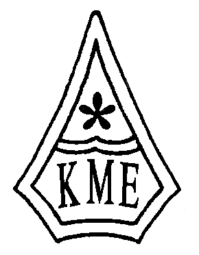
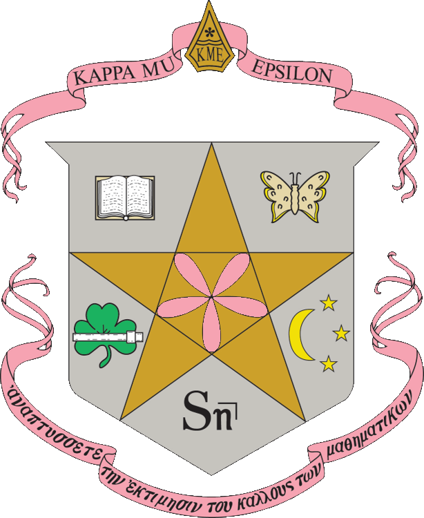

About Kappa Mu Epsilon
Kappa Mu Epsilon is a specialized honor society in Mathematics. KME was founded in 1931 to promote the interest of mathematics among undergraduate students. Its chapters are located in colleges and universities of recognized standing which offer a strong mathematics major. The chapters' members are selected from students of mathematics and other closely related fields who have maintained standards of scholarship, have professional merit, and have attained academic distinction. Both men and women are eligible for membership.
Growth
The society has grown steadily since its founding. KME has over 80,000 members in about 150 chapters in 35 states.
Purpose
The primary purposes of being a member of Kappa Mu Epsilon include the following:
- to further the interests of mathematics in those schools which place their primary emphasis on undergraduate programs;
- to help undergraduate students realize the important role that mathematics has played in the development of civilization;
- to develop an appreciation of the power and beauty possessed by mathematics, due, mainly, to its demand for logical and rigorous modes of thought;
- to provide a society for the recognition of outstanding achievement in the study of mathematics at the undergraduate level;
- to disseminate the knowledge of mathematics and familiarize its members with the current progress in this important area of human interest.
The KME Insignia
Since the first serious group of students of mathematics to be organized into a fraternity was the Society of Pythagoras, it was decided that the emblems of Kappa Mu Epsilon be those of the Pythagoreans as nearly as possible. The emblems chosen for the new fraternity were the five-pointed star and the pentagon.
The Badge
The Badge of the Society is a pentagon with the sides slightly concave. In the upper half is the five-leaf rose whose equation is ρ = a sin (5 θ). In the lower half are the letters K. M. E . 
The Seal
The seal is a five-pointed star enclosing a five-leaf rose and encircled by the legend "Kappa Mu Epsilon, Founded 1931." 
The Crest
The crest is a shield enclosing the five-pointed star; in the star is the graph of the rose ρ = a sin (5 θ) , the symbol of pure mathematics. Around the star are five symbols indicative of the many applications of mathematics : at the upper right is a conventionalized butterfly, for the biological sciences; at the lower right is a moon and three stars, for the physical sciences; at the bottom is the symbol S angle n, for the business world; in the lower left is a shamrock and a slide rule, for the engineers; at the upper left is a book of knowledge, for the students and teachers who are continually extending the boundaries of mathematics and its applications. Above the shield is the design of the badge of the Society, and below it is a streamer upon which is printed the Greek motto. 
The Colors
The colors are the pink of the wild rose and the silver of the star.
The Flower
Since a five-leaved rose fits into the pentagon, the wild rose which usually has five petals is the fraternity flower.
The Motto
The motto of Kappa Mu Epsilon, translated into English, is "Develop an appreciation for the beauty in mathematics." The objective of the organization since its inception has been the fulfillment of this motto.
National Conventions
National Conventions of Kappa Mu Epsilon are held in the odd numbered years. Conventions usually commence on a Thursday evening of an April weekend and continue through Saturday noon. These afford students and faculty an opportunity to travel to a host chapter school and meet other students and faculty from across the country. The main feature of each national convention is the presentation of papers by student members of KME. These talks are of high quality and the presenters spend much time in their preparation. Official business at the national convention is transacted by members of the National Council and by student delegates selected by each chapter. Items appearing before the convention concern the election of officers, voting on motions to amend the constitution or by-laws, voting on motions relating to establishment of new chapters and deciding matters concerning the society.
Regional Conventions
Regional Conventions are held in the even numbered years. Six regions have been carefully defined, with a regional director appointed to direct regional activity and to help plan for the regional conventions. When a chapter decides to host a regional convention, the chapters in the region as well as those from surrounding states are invited to attend. Student papers are presented at each of these conventions, and the academic level of these papers has always been excellent.
National Council
National Council consists of the National President, National President-Elect, National Secretary, National Treasurer, and National Historian.
The Pentagon
The Pentagon is the official journal of the society: it is published semi-annually in December and May. Articles of interest to undergraduate mathematics students are included, assisting the society in achieving its objectives. News items about various chapters and their activities, as an aid to establishing ties between the chapters, are also included, as are book reviews and problems.
George Mach Service Award
The George R. Mach Distinguished Service Award was established by the National Council to be given each biennium to an individual who has made major contributions to the Society. Nominations for the award are solicited from each chapter in the spring of those years in which no biennial convention is held. From these nominations the National Council determines the recipient for that biennium.